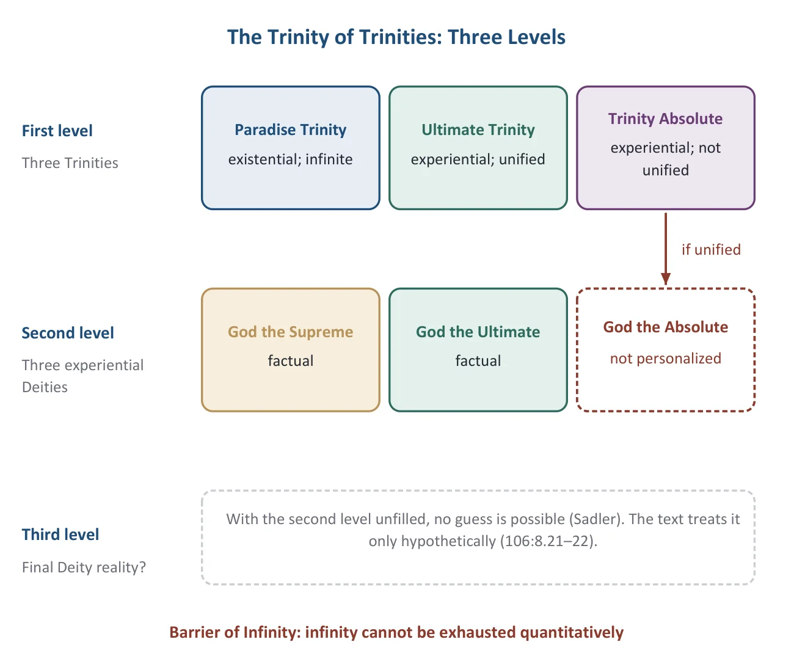

Original: A História Final, capítulo XII, A síntese impossível (pp. 110–115)
Sadler expõe em nove passos por que aparecem Deidades e Trindades experienciais. A razão, diz ele, é que uma separação entre o Paraíso e o Filho Eterno, deixada deliberadamente sem solução por Deus, vai sendo resolvida nível por nível por meio da síntese de poder-personalidade. A síntese do terceiro nível, porém, exigiria esgotar a infinitude, de modo que nunca pode ser completada. Sadler chama isso de “Barreira da Infinitude” e “Impasse dos Absolutos”, e conclui que a Trindade das Trindades nunca preencherá o seu segundo nível.
Sadler acompanhou a história do universo-mestre desde a alvorada do tempo até as idades posteriores à sexta. O seu primeiro grande movimento encerrou-se com a primeira síntese, quando Deus, o Supremo, emergiu; o segundo encerrou-se com a segunda síntese, a emergência de Deus, o Último. Agora ele pergunta: por que Deidades experienciais evoluem e emergem? Por que há duas? Haverá uma terceira?
Por baixo de tudo isso está o plano de Deus estabelecido no passado eterno. Para ler esse plano, Sadler volta até a Idade Zero e organiza o que realmente aconteceu em nove passos.
| Passo | O que aconteceu | Ponto-chave |
|---|---|---|
| 1. Síntese existencial dos potenciais | Os três Absolutos são ligados em um só no Absoluto Universal | Uma síntese existencial, não experiencial |
| 2. Não síntese dos factuais | O Filho Eterno (tese) e o Paraíso não espiritual e impessoal (antítese) permanecem separados | Coordenados pela mente, nunca sintetizados |
| 3. Tese sobre tese | A Trindade do Paraíso forma-se a partir da união das três Pessoas | Não uma síntese, mas teses sobrepostas |
| 4. Realidade subabsoluta | Com Havona, projetam-se os níveis finito e absonito | Os três níveis ainda existenciais |
| 5. Realidade experiencial | A Trindade refletida em cada nível torna-se o potencial de uma Deidade experiencial | Sementes de Deus, o Supremo, o Último e o Absoluto |
| 6. Síntese de poder-personalidade | Em cada nível, o poder é reunido e unificado com a personalidade espiritual por meio da mente | O método para resolver o problema deixado em aberto |
| 7. Síntese finita | As realizações dos Criadores Supremos tornam-se unas com a pessoa espiritual da Supremacia | Emergência do Ser Supremo |
| 8. Síntese absonita | A primeira Trindade experiencial unifica todo o universo-mestre | Emergência de Deus, o Último |
| 9. Síntese absoluta | Os três Absolutos, existencialmente um, devem ser sintetizados experiencialmente | A tarefa da segunda Trindade experiencial |
A chave dos nove passos é o segundo. Quando Deus gerou o Filho Eterno, a tese da Deidade, Ele gerou também o Paraíso, a sua antítese. O Filho é a personalidade absoluta; o Paraíso é o absoluto dos modelos, nem pessoal nem espiritual.
Com relação a toda realidade factualizada, não-espiritual, impessoal e não-volicional, o Paraíso é o absoluto dos arquétipos.105:3.4
Segundo Sadler, Deus não sintetizou essas duas factualidades absolutas. Ele as coordenou por meio da mente e, de resto, deixou-as separadas, um problema reservado às Deidades e Trindades experienciais ainda por vir. Do lado dos potenciais, ao contrário, a síntese esteve presente desde o início.
Nos níveis subinfinitos, eles estão funcionalmente diferenciados, mas, na infinitude, eles são UM.0:11.15
Mesmo a Trindade do Paraíso do terceiro passo não é, para Sadler, uma síntese, mas uma tese colocada sobre outra. A Deidade existencial está inteiramente unificada, mas permanece separada da realidade não deidade, exceto pela coordenação da mente.
Quando Havona aparece, Deus projeta os níveis finito e absonito, além do absoluto. Na primeira idade, os três níveis eram existenciais. A segunda idade abre-se na alvorada do tempo com o aparecimento da realidade experiencial. Como a Trindade do Paraíso sempre permeou os três níveis, raciocina Sadler, a sua presença deve ter-se refletido em cada um deles, e, quando a realidade experiencial foi criada, esses reflexos tornaram-se os potenciais de três Deidades experienciais: a pessoa espiritual de Deus, o Supremo, no nível finito, Deus, o Último, no nível absonito, e, no nível absoluto, Deus, o Absoluto, latente no Absoluto da Deidade. O texto também diz que as três Deidades experienciais estavam latentes na Trindade existencial.
Essas três Deidades experienciais eram potenciais, na Trindade existencial, a Trindade do Paraíso, mas os seus surgimentos no universo, como personalidades de poder, dependem, em parte, dos seus próprios funcionamentos experienciais, nos universos do poder e da personalidade…0:12.4
Para que esses potenciais se personalizem como Deidades factuais, o problema que Deus deixou deliberadamente sem solução precisa ser resolvido. O que fazer com o Paraíso? Dito de outro modo, como reunir em uma só coisa a totalidade da realidade factual nos níveis finito, absonito e absoluto? Sadler vê apenas um método: a síntese de poder-personalidade. Em cada nível, a totalidade do poder é reunida e, pela ação da mente, unificada com a personalidade espiritual da Deidade. Poder-se-ia descrevê-lo como a mente dominando a energia-matéria e, pela escolha da personalidade, colocando-a sob a condução do espírito.
…como é ilustrado pela síntese de poder-personalidade ora encaminhando-se junto com a evolução do Ser Supremo.106:5.2
No nível finito, o poder do Supremo Todo-Poderoso torna-se uno com a pessoa espiritual da Supremacia, e o Ser Supremo emerge. No nível absonito, a primeira Trindade experiencial unifica todo o universo-mestre, e Deus, o Último, completa o Seu crescimento. O que resta é a síntese do nível absoluto. Esse esboço é, na prática, um resumo de todo o estudo.
O problema que a segunda Trindade experiencial enfrenta pode ser enunciado brevemente. Os três Absolutos de potencialidade são infinitos, mas essa Trindade não é, pois o Supremo e o Último são Deidades experienciais derivadas da Trindade existencial do Paraíso.
O alcance da síntese de poder-personalidade ampliou-se a cada etapa. A Supremacia abarcou todo o finito, a totalidade dos significados-valores finitos no grande universo. A Ultimidade sintetizou todo o absonito, a totalidade dos significados-valores absonitos no universo-mestre. Se Deus, o Absoluto, pudesse aparecer experiencialmente, Ele teria de abarcar a totalidade dos significados-valores experienciais no Cosmos Infinito, um universo sem fim. E essa totalidade é a infinitude. Aqui Sadler traz à tona o velho paradoxo: o que acontece quando uma força irresistível encontra um fato inamovível? A força irresistível da Trindade Absoluta ficou face a face com o fato inamovível da infinitude eterna.
Em cada nível, a unificação da Deidade experiencial nada deixou de fora: abarcou as coisas junto com os seus significados e valores, a matéria junto com a mente e o espírito, e os fatos assim como as idéias e as relações. Nos níveis finito e absonito, o processo pôde seguir o seu curso completo porque o grande universo e o universo-mestre eram delimitados. Cada um tinha um “exterior”. O nível final não tem limites. O que poderia estar fora de uma criação que é infinita?
Sadler examina o que essa última síntese exigiria sob três aspectos. Fisicamente, o Cosmos Infinito teria de ser materialmente completado. Espiritualmente, o potencial infinito dentro do Absoluto da Deidade teria de ser plenamente factualizado na experiência. Pessoalmente, os potenciais deificados e os não deificados teriam de ser unificados dentro de um Absoluto que pudesse compreender e contatar ambos. Tal tarefa não conhece nem fim nem limite, nem um exterior nem um além. A infinitude não é algo que se possa esgotar quantitativamente. O texto também retrata o nível de Deus, o Absoluto, como o lugar onde a Deidade esgota o seu potencial de personalização.
Neste nível supracriador, a Deidade experiencia a exaustão do potencial personalizável, encontra Sua completude de divindade…0:2.18
Assim Sadler chega à sua conclusão. O que uma Trindade infinita realizou existencialmente, uma Trindade subinfinita não pode realizar experiencialmente. A Trindade Absoluta pode começar essa obra e prossegui-la sem fim, mas nunca pode completá-la. Portanto, Deus, o Absoluto, não pode emergir do potencial infinito do Absoluto da Deidade. É isso que Sadler chama de “Barreira da Infinitude”, o “Impasse dos Absolutos”.
O Livro de Urântia também duvida da unificação plena da Trindade Absoluta. Contudo, o texto não fecha a porta aí. Observando que a trinitarização pode realizar aquilo que, de outro modo, é inatingível, ele deixa aberta a possibilidade de que Deus, o Absoluto, venha um dia a tornar-se factual.
A Trindade Última está unificando-se experiencialmente até completar-se, mas duvidamos verdadeiramente da possibilidade dessa unificação plena da Trindade Absoluta. O nosso conceito, contudo, da eterna Trindade do Paraíso, é mantido como uma lembrança, sempre presente, de que a trinitarização da Deidade pode realizar aquilo que, de outro modo, seria inatingível…0:12.8
O texto também chama Deus, o Absoluto, de “a terceira e última das Deidades experienciais” [106:6.6]. O “impossível” de Sadler vai um passo além da “dúvida” do texto. A sua conclusão repousa na premissa de que a infinitude teria de ser esgotada quantitativamente; o texto deixa em aberto por que meios a tarefa poderia ser realizada.
Mesmo que a Trindade Absoluta não possa ser unificada, a sua simples factualização torna possível uma grande coisa: a união das três Trindades, a Trindade das Trindades. Os seus membros não são três Deidades, mas três Trindades, uma associação de Deidade de três níveis. No primeiro nível, as três Trindades estão unidas; no segundo, as três Deidades experienciais buscam a união; no terceiro, deve haver alguma realidade final de Deidade.
Na Trindade das Trindades, a infinitude experiencial alcança identidade com o infinito existencial; e ambos são como um no EU SOU pré-experiencial e preexistencial.106:8.1
| Trindade | Origem | Infinitude | Absolutez | Unificação |
|---|---|---|---|---|
| Trindade do Paraíso | Existencial | Infinita | Absoluta | Unificada |
| Trindade Última | Experiencial | Subinfinita | Subabsoluta | Unificada |
| Trindade Absoluta | Experiencial | Subinfinita | Absoluta | Não unificada |
Sadler diz que essa é a meta para a qual o longo, longuíssimo crescimento do universo-mestre tem apontado: a Trindade composta de toda a Deidade, existencial e experiencial juntas, uma “tese das teses”, a tese final da Deidade.
Essa Trindade tríplice, porém, tem três níveis verticais. No primeiro nível, as três Trindades existem de fato. Das três Deidades experienciais que pertencem ao segundo nível, duas já são factuais: Deus, o Supremo, e Deus, o Último. A que falta é Deus, o Absoluto: o Absoluto da Deidade não foi personalizado, nem mesmo de forma limitada.
Deus, o Absoluto, está, indubitavelmente, envolvido nessa associação como a personalidade conseqüência da função final do Absoluto da Trindade, e o Absoluto da Deidade ainda é uma realidade existencial com status de eternidade.106:8.16

A personalização experiencial de Deus, o Absoluto, depende da unificação da Trindade Absoluta, e essa unificação depende de se esgotar toda a infinitude. Contudo, a infinitude não pode ser esgotada quantitativamente. A Trindade das Trindades pode, portanto, ser formada, porque as suas três Trindades membros são factuais, mas o seu segundo nível não pode ser preenchido. E, se o segundo nível não pode ser preenchido, não há como sequer conjecturar o que poderia ser o terceiro nível. O estudo detém-se mais uma vez diante da “Barreira da Infinitude”.
Aqui, ao que parece, a história do universo-mestre chega ao seu fim. Essa imensa criação experiencial dá origem a duas Deidades experienciais e a duas Trindades experienciais e prepara o terreno sobre o qual a Trindade das Trindades se torna factual. Aí ela chega a um impasse. A Trindade Absoluta não pode ser unificada; Deus, o Absoluto, não pode, portanto, ser personalizado em poder; e o segundo nível da Trindade tríplice não pode ser completado.
Deus não fica frustrado com isso. Nas palavras de Sadler, Deus habita na eternidade e, assim, aborda a infinitude existencialmente, “de dentro”. A Deidade experiencial, ao contrário, deve abordar a infinitude “de fora”, e penetrar experiencialmente, de fora, a totalidade da infinitude exigiria outra eternidade. O argumento fechou o círculo. Para esgotar a infinitude, seria preciso chegar ao fim da eternidade; mas a eternidade é infinita, e a infinitude é eterna. Nem mesmo a Trindade do Paraíso pode experiencializar o Absoluto da Deidade, pois isso só é possível a uma Trindade experiencial. Sadler encerra o capítulo observando que ninguém pode fazer o que nem mesmo a Trindade da infinitude pode fazer.
A conclusão de Sadler soa como um beco sem saída, mas, lida junto com a parábola do campo de jogo do capítulo anterior, ganha um sentido diferente. Não ter fim não é um fracasso; é também uma promessa de que o crescimento nunca cessará. O texto confessa que não sabe o que aconteceria se o segundo nível da Trindade das Trindades fosse unificado, mas indica claramente a direção.
Não sabemos, mas confiamos na suposição de que conduziria diretamente à compreensão do EU SOU, como um experiencial alcançável.106:8.22